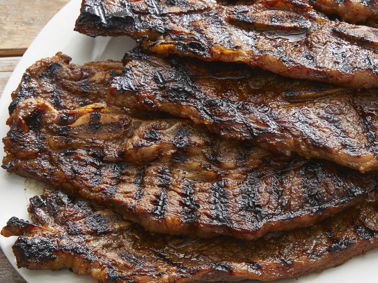

BULGOGI

Description
This galbi recipe makes the best Korean BBQ. It is typically cooked over wood charcoal but can be cooked with a grill, oven, or a nonstick frying pan. You can add green onions, sesame seeds, or fresh ginger.
Ingredients
- 5 pounds beef short ribs, cut flanken style
- 1 Asian pear, cored and cubed
- ion, coarsely chopped
- 5 cloves garlic
- 1 cup soy sauce (such as Kikkoman®)
- 1 cup brown sugar
- ¼ cup honey
- ¼ cup sesame oil
- black pepper to taste
Steps
- Place ribs in a large pot and cover with cold water. Soak ribs in the refrigerator for 1 hour to pull out any blood. Drain.
- Remove ribs from marinade and cook on the preheated grill until meat is tender and the outside is crusty, 5 to 10 minutes per side. Discard marinade.Combine Asian pear, onion, and garlic in a blender; blend until smooth. Pour into a large bowl and stir in soy sauce, brown sugar, honey, sesame oil, and black pepper. Add ribs to soy mixture; turn to coat evenly. Cover the bowl and marinate in the refrigerator, 8 hours to overnight.
- Preheat an outdoor grill for high heat and lightly oil the grate.
- Remove ribs from marinade and cook on the preheated grill until meat is tender and the outside is crusty, 5 to 10 minutes per side. Discard marinade.